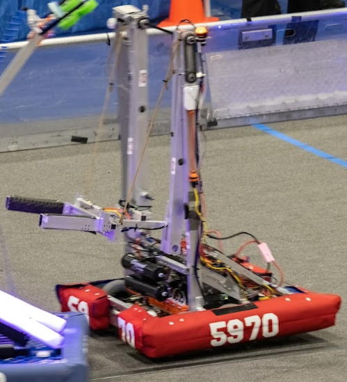
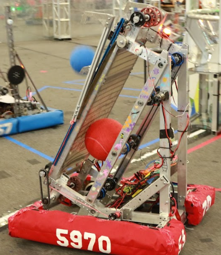
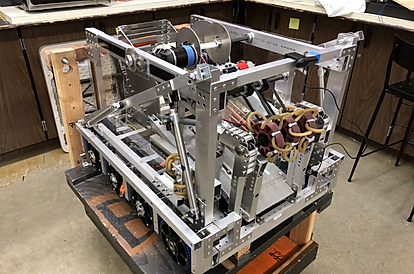
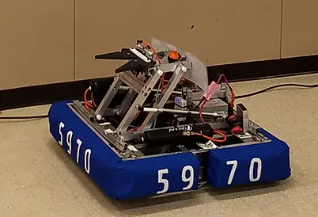
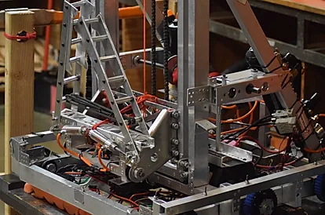
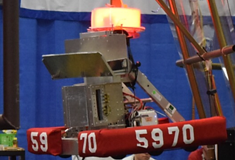
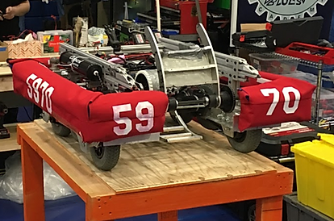

9th year, 9th robot. The robot has an intake that pulls in foam rings - called notes - and a shooter that launches them out at around ~55 degrees. We had initially intended for the robot to have a climb mechanism, but at our first competition it did not work (A lot of things did not work). The day of the loadout for the second competition, we tested a second climb mechanism that also did not work, so we removed it. Overall we had a sturdy robot that performed well, and at the minimum never was dead on the field.
Lockpick featured a West Coast drivetrain, pneumatic claw, and four-bar. Due to repeated malfunctions, the four-bar was removed in between weeks, and replaced with a modified claw to pick up and score inflatable cubes and traffic cones into the lower goal. We also began to transition to brushless motors, allowing us to create more powerful drivetrains and components. This was also the first year we used a CNC machine to manufacture the majority of our robot. This meant our drivetrain was extremely sturdy, as it had been precisely machined.


Officially named Lanky, this robot was designed to compete in Rapid React, our first game following the Covid-19 pandemic. It features a H-shaped West Coast drivetrain, designed to help intake balls easier. It was able to score the balls into the low goal, and drive during autonomous. Between our first and second weeks, we added a climbing mechanism and an autonomous routine to score one ball into the goal. We also earned a Judge's Award for innovative use of build materials - we had built the robot out of scrap material to save money.
A A A A A A AA A A A A A A A A A A A A A A A A A A A A A AAAAAAA AAAAA AAA A


Officially named Sand Salacious Beavertronics Crumb Crawler, this robot was not afforded the chance to compete due to the Coronavirus outbreak. However, during the build season, we learned valuable lessons about manufacturing and controlling vertical flywheel mechanisms, pneumatically-actuated climbing arms, four-bar ground intake, and a three-power-cell capability conveyor belt mechanism.
There were two iterations of this design, where the manipulators were radically different for both competitions we went to. At our first competition, we had a roller intake and a “beak” to pick up cargo and hatches, respectively. These manipulators were on a large rotating arm, allowing us to collect in the front and deposit in the back. In our next competition,
we redesigned due to some issues. Because of this, we simplified our design.


In our third year, we tried an elevator controlled by a motor. This was our most complex manipulator built in our team’s history. Although it wasn’t consistent, it was still quite an accomplishment for us. However, we had a consistent drivetrain for defense and a winch-based climber that helped us succeed in competition.
Hangry is the most famous robot on our team because it brought us all the way to the Houston World Championship. It could be fed gears by the human player and bring them up to the airship. It could also climb very quickly and consistently using a winch that pulled the robot off the ground. The entire robot climbed in just under three seconds! It couldn’t launch fuel, but the consistency of all the other tasks made us stand out in competitions.


This was our first robot ever, and its simplistic design helped us in competition. It had wheels with puffy tires to go over obstacles while being short enough to drive under low-hanging bars. To shoot balls up into the castle, it had a roller to intake them and used a flywheel to shoot it six feet in the air.